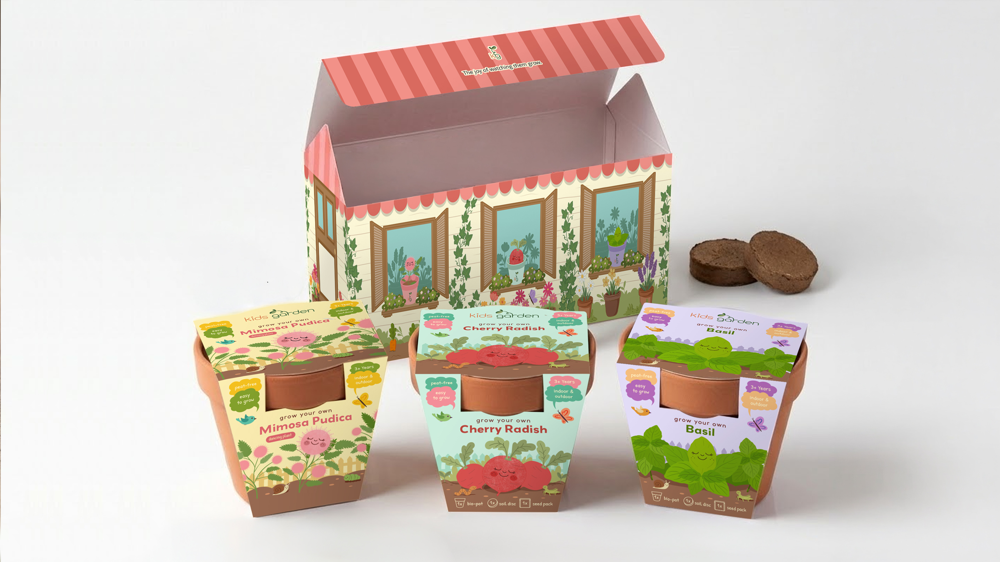

Packaging Case study 01
Kids Garden
A brand built from the ground up, and a packaging system that grows with every new seed kit.
- Client
- Kids Garden
- Category
- Children's gardening kits
- My role
- Brand identity, packaging, illustration, print collateral
- Sold
- Online and in retail stores
- Status
- Ongoing client

01
The brief
Kids Garden makes gardening kits that help children grow their first plants, from sunflowers and cherry radishes to the touch-sensitive mimosa. The owner had the product and the mission, but no brand yet.
My job was to build the identity and the packaging together, so the kits could sell on the brand's website and hold their own on a physical retail shelf, surrounded by toy and garden brands competing for the same attention.
02
The challenge
A
Two audiences
Playful enough for a child to grab off the shelf, clear and trustworthy enough for the parent who pays.
B
A growing range
New plants keep arriving. Every box had to feel like part of the family without looking identical.
C
Many formats
Single kit boxes, a larger "house" box that holds several kits, gift bags, a brochure and banners.
03
Approach
I started with the logo, because everything else would grow out of it. The idea that stuck was literal: a sprout growing out of the letter "r". The name itself plants something, and the mark explains the product before anyone reads a word.
From there I built a cast of illustrated seed characters, one for each plant. They give children someone to root for, and give every box its own personality inside a shared system.


04
Identity
Color & type

Seed characters

05
Packaging system
The first two kits, Mimosa and Cherry Radish, became the templates: logo, plant name and character in fixed positions, with color and illustration that change per plant.
That system is what makes each new kit quick and consistent to produce. It's now carrying the range forward with Peas, Zinnia, Marigold and Sunflower.


06
Production

- Formats
- Kit boxes, house box, gift bags, trifold brochure, banners
- Artwork
- Built on the production dielines, with bleed and safe zones checked on every panel
- Templates
- Master files per format, so new plants drop in without rebuilding the layout
- Delivered
- Print-ready PDFs plus layered source files
07
Outcome
5
formats in one visual system
2
sales channels: online and retail
Repeat
client as the range keeps growing
★★★★★
The owner left a five-star review highlighting how the brand vision was translated, the attention to detail, responsiveness to feedback, and follow-through when challenges came up.
Next case study
Pristes · Zeit Dust →
Supplement carton with a nine-language regulatory panel.